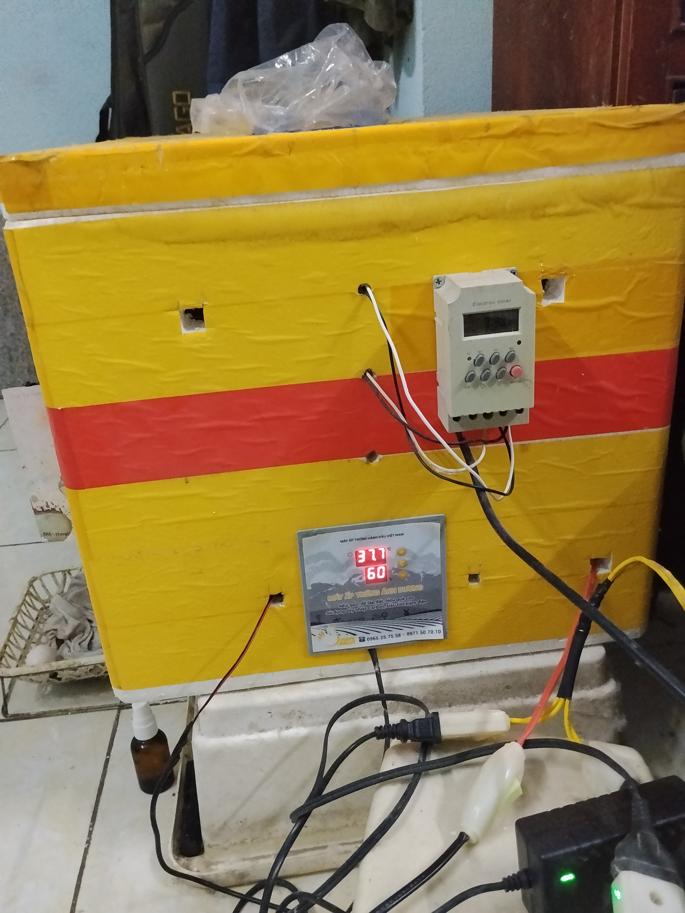
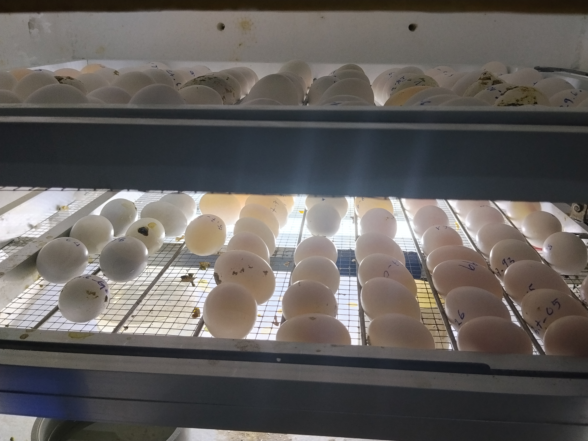

TIN TỨC & CHIA SẺ KINH NGHIỆM
(Nhà nuôi bồ câu Bổn Tân xin giao lưu chia sẻ, trao đổi kinh nghiệm tại trang này)
1. KĨ THUẬT NUÔI CHIM BỒ CÂU PHÁP NHỐT CHUỒNG
Đăng ngày: 08/07/2026Kỹ thuật nuôi chim bồ câu Pháp nhốt chuồng đòi hỏi sự kết hợp chặt chẽ giữa chọn giống, thiết kế chuồng trại kiên cố, chế độ dinh dưỡng chuyên biệt, chăm sóc sinh sản và phòng bệnh nghiêm ngặt để tối ưu hóa năng suất sinh sản và chất lượng chim thương phẩm.
1. Chọn giống:
Bồ câu Pháp có các loại giống như VN2 (Mimas), VN3 (Titan). VN2 thường đẻ 9-11 lứa/năm; VN3 có thân hình vạm vỡ, sản phẩm chim ra ràng có trọng lượng lớn hơn. Chọn giống tốt nhất khi chim non được 3-4 tháng tuổi, mắt sáng, lông mượt, năng động.
2. Thiết kế chuồng trại và chọn đồ dùng:

Kết cấu chuồng nuôi chim bồ câu Pháp
Đặt chuồng hướng đông nam thoáng mát, khô ráo. Mỗi ô cho 1 cặp sinh sản có kích thước 50x50x50 cm.

Máng ăn cho chim

Máng nước cho chim
3. Chế độ dinh dưỡng:
Thành phần chính là ngũ cốc (gạo lức, bắp, đậu), cám tổng hợp. Luôn theo dõi sức khỏe chim để điều chỉnh phù hợp.
4. Chăm sóc chim bồ câu Pháp sinh sản:
Chim đẻ mỗi lứa 2 trứng, ấp khoảng 17-18 ngày thì nở. Việc ấp trứng nhân tạo bằng máy giúp tăng tỷ lệ nở lên trên 80%.

Máy ấp trứng nhìn từ bên ngoài
5. Phòng bệnh:
Giữ môi trường chuồng trại sạch sẻ, dọn phân thường xuyên, nguồn nước và thức ăn vệ sinh, bổ sung vitamin AD3E và men tiêu hóa.

Trứng đặt ở các ngăn ấp bên trong
Đặt Mua Chim
Gửi đơn đặt hàng trực tiếp để Nhà Nuôi Bồ Câu Bổn Tân liên hệ lại ngay.
👉 ĐẶT MUA NGAY